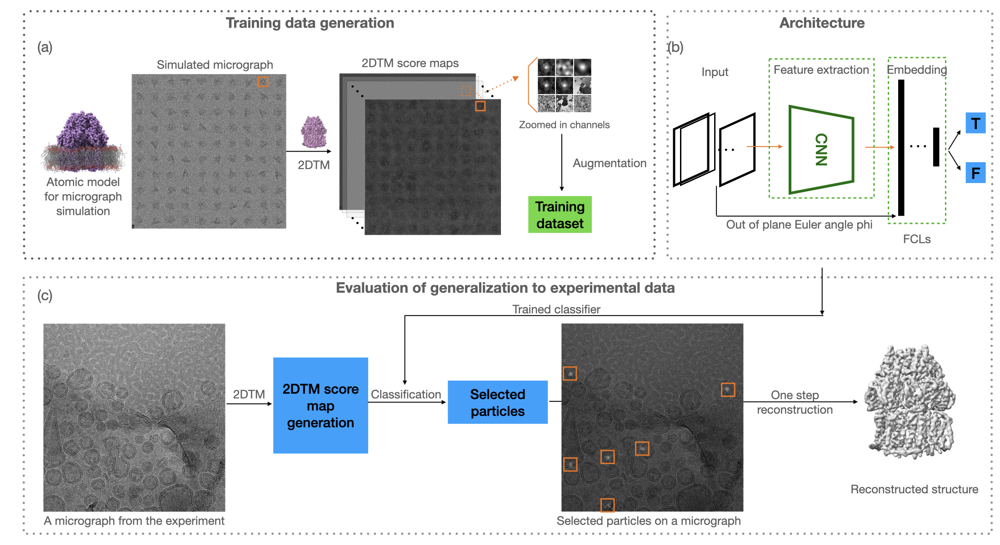

Projects

Membrane Protein Detection from Liposomes using 2DTM and Deep Learning
This project focuses on the detection of membrane proteins from liposome structures using advanced deep learning techniques. Key achievements include the development of a novel 2D template matching algorithm and the successful application of convolutional neural networks for feature extraction.
Local Motion Correction on Cryo-EM Movie Frames
This project focuses on correcting local motion artifacts in cryo-electron microscopy (Cryo-EM) movie frames using advanced image processing techniques. Key achievements include the development of a novel algorithm for motion correction and the successful application of deep learning for artifact removal.
Deep Learning (CNN-BiLSTM) in Electron Microscopy
A CNN-BiLSTM that learns local edge shapes and longer-range spectral context, trained on simulated + curated experimental spectra.
Electron Energy Loss Spectroscopy (EELS) is powerful but slow and operator-dependent: background subtraction, low SNR, and overlapping edges make peak identification error-prone—especially in high-throughput EM workflows.